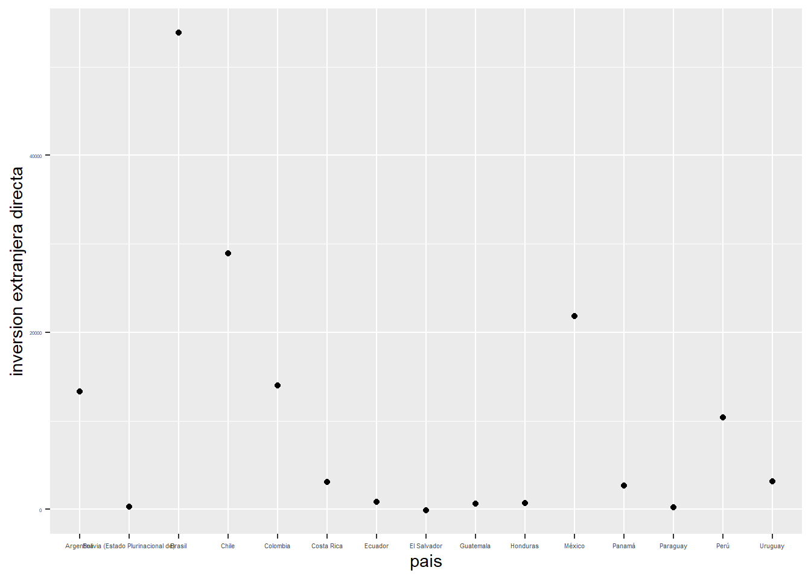
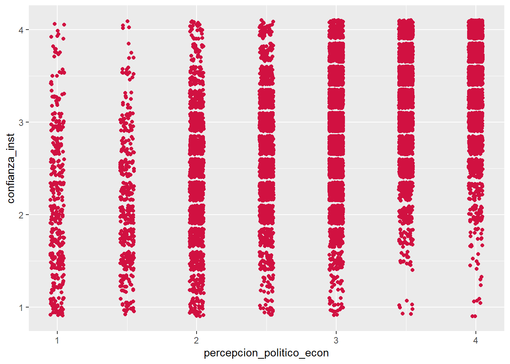

| var | label | n | NA.prc | mean | range | |
|---|---|---|---|---|---|---|
| 10 | fun_econ | fun_econ | 13360 | 0 | 3.162725 | 3 (1-4) |
| 7 | econ_act | econ_act | 13360 | 0 | 3.461826 | 4 (1-5) |
| 9 | fun_demo | fun_demo | 13360 | 0 | 2.883308 | 3 (1-4) |
| 11 | gob_nodemo | gob_nodemo | 13360 | 0 | 2.461976 | 3 (1-4) |
| 8 | econ_act_anipas | econ_act_anipas | 13360 | 0 | 3.446407 | 4 (1-5) |
| 15 | percep_corrup | percep_corrup | 13360 | 0 | 2.956063 | 3 (1-4) |
| 5 | conf_gob | conf_gob | 13360 | 0 | 3.000299 | 3 (1-4) |
| 4 | conf_cong | conf_cong | 13360 | 0 | 3.077021 | 3 (1-4) |
| 3 | conf_banc | conf_banc | 13360 | 0 | 2.553219 | 3 (1-4) |
| 2 | con_judicial | con_judicial | 13360 | 0 | 2.962949 | 3 (1-4) |
| 6 | desem_gob | desem_gob | 13360 | 0 | 1.597380 | 1 (1-2) |
| 17 | prot_privada | prot_privada | 13360 | 0 | 2.486826 | 3 (1-4) |
| 16 | prot_crimen | prot_crimen | 13360 | 0 | 2.977470 | 3 (1-4) |
| 13 | imagen_prog_pais | imagen_prog_pais | 13360 | 0 | 2.031811 | 2 (1-3) |
| 12 | grad_protesta | grad_protesta | 13360 | 0 | 2.395284 | 3 (1-4) |
| 1 | apoyo_gob_militar | apoyo_gob_militar | 13360 | 0 | 1.624102 | 1 (1-2) |
| 14 | inv_ext_dir | inv_ext_dir | 13360 | 0 | 10483.793158 | 53990.87 (-100.91-53889.96) |
Trabajo 2
1 El riesgo politico en Chile y sus posibles impacto en las inversiones extranjeras.
2 Por: Diego Martinez
2.1 Introducción:
Los trabajos sobre riesgo politico son propios de los profesionales de negocios internacionales (ver Jeffrey Simon and Simon (1984)), sin embargo es posible encontrar trabajos que aborden el riesgo politico desde la ciencia política este es el caso del estudio de Johannes Leitner que define al riesgo político como “un concepto que cubre aquellos factores de riesgo para las empresas internacionales que están arraigados en el entorno político e institucional de un país pero que tienen consecuencias inmediatas en el desempeño de la empresa”.(ver Johannes Leitner and H. Meissner 2016)
Ahora bien existen pocos trabajos desde la ciencia política que vean la relación entre los regimenes politicos y los distintos tipos de riesgo politicos que existen, por lo que, el objetivo de este trabajo sera ver la relacion existente entre la estabilidad política y el riesgo politico, con la finalidad de ver el impacto que tienen ambos en la inversion extranjera. cabe destacar que los tipos de riesgos politicos no se evaluaran en base a la perspectiva del inversionista, sino mas bien, en la percepcion de la ciudadania con respecto al regimen politico en el que estan inmersos para ver asi como estas percepciones podrian afectar la estabilidad del regimen y en consecuencia al marco juridico de las inversiones en Chile.
Es debido a lo anterior que este trabajo se enmarcara dentro del estudio de la politica comparada (Pasquino (2014)) , pues se pretende comparar la estabilidad de distintos regimenes de latinoamerica con la finalidad de explorar como es el clima politico para los negocios ,asi como, posibles percepciones que podrian derivar en conflictos politicos internos que amenacen tanto al regimen como las empresas.
algunas factores que se consideran dentro de la categoria de riesgo politico, y que afectan a Chile son: la corrupción, crimen organizado, el clima de negocios (esto segun el ultimo informe de riesgo politico en America Latina).
ademas dentro del riesgo político encontramos los siguientes indicadores del riesgo: expectativas económicas vs. realidad; fracasos de la planificación económica; dirección política; conflicto externo; corrupción en el gobierno; injerencia del ejército en política; influencia de la religión organizada en política; ley y tradición de orden; tensiones raciales y de nacionalidad; terrorismo político; guerra civil; desarrollo de partidos políticos; y calidad de la burocracia. (Loyola, 2006)
En el presente trabajo se realizara un analisis de caracter exploratorio con la finalidad de responder a la pregunta: ¿existe relacion entre las perspectivas politico-economicas y la cantidad de inversion extranjera directa? las variables a utilizar serán la percepción ciudadana con respecto al funcionamiento de la economia del pais, perspectuvas del regimen politico, percepción de la corrupción, variables sobre la percepcion de los derechos politicos y finalmente variables de conflicto social como: grado de acuerdo con las protestas, protección del Estado contra el crimen y la proteccion a la propiedad privada .
Como evidencia que apoya a este trabajo tenemos la investigación de Alejandro Astudillos quien demestra mediante un estudio cuantitativo que las instituciones politicas fuertes tienen un impacto positivo en el crecimiento economico asi como el clima de negocios y de las inversiones.(ver Jimenez, n.d.) Es por ello que en el presente trabajo se evaluara la percepcion de la ciudadania chilena, con la finalidad de detectar posibles riesgos para el clima de las inversiones y del sistema politico, para ello se recurrira a la base de datos de latinobarometro 2023 que es una encuesta que mide percepciones, actitudes y valores; mientras que para analizar el fujo de inversion extranjera se recurrira a las bases de datos que proporciona la CEPAL en su sitio web CEPALSTAT que entrega la cantidad de inversión extranjera directa medida en millones de dolares.
2.2 Analisis descriptivo de variables
En el presente trabajo las variables a utilizar son las siguientes:
como podemos ver las variables a utilizar son 17 donde encontramos variables de confianza en las instituciones politicas nacionales, como lo son: Gobierno, Congreso, poder judicial y finalmente en las instituciones bancarias. Por otro lado, tenemos variables de perspectivas economicas, entre las que destacan: satisfacción con el funcionamiento de la economia, imagen progreso país, economia con respecto al año pasado, percepcion economica actual.Tambien se utilizaran variables de satisfaccion con el regimen politico: satisfaccion con el funcionamientos de la democracia, acuerdo o desacuerdo ante un hipotetico gobierno no democratico, apoyo a un golpe militar o no, ademas de una variable sobre el desempeño del gobiero. Por ultimo, encontramos variables de derechos politicos como son: grado de acuerdo con las protestas, protección del Estado contra el crimen y protección a la propiedad privada.
3 gráfico de inversión extranjera directa para los paises latinoamericanos.

en el presente grafico podemos ver los paises y sus la respectiva inversión extranjera que reciben, siendo Brasil el pais que mayor inversion extranjera recibe y el Salvador el que menos recibe.
Ahora bien, con la finalidad de explicar la variación en la inversion extranjera de estos paises se juntaran las variables mas arriba seleccionadas para comprobar si la hipotesis: las variables politico-economicas afectan a la inversión extranjera.
| var | label | n | NA.prc | mean | range | |
|---|---|---|---|---|---|---|
| 1 | confianza_inst | confianza_inst | 13360 | 0 | 2.898372 | 3 (1-4) |
| 9 | percepcion_econ | percepcion_econ | 13360 | 0 | 3.454117 | 4 (1-5) |
| 2 | conflic_social | conflic_social | 13360 | 0 | 2.428630 | 3 (1-4) |
| 5 | estado_derecho | estado_derecho | 13360 | 0 | 2.732148 | 3 (1-4) |
| 6 | imagen_progreso_pais | imagen_progreso_pais | 13360 | 0 | 2.031811 | 2 (1-3) |
| 3 | corrupcion | corrupcion | 13360 | 0 | 2.956063 | 3 (1-4) |
| 4 | desempeño_gobierno | desempeño_gobierno | 13360 | 0 | 1.597380 | 1 (1-2) |
| 7 | inestabilidad_reg | inestabilidad_reg | 13360 | 0 | 1.624102 | 1 (1-2) |
| 10 | percepcion_politico_econ | percepcion_politico_econ | 13360 | 0 | 3.023017 | 3 (1-4) |
| 8 | inv_ext_dir | inv_ext_dir | 13360 | 0 | 10483.793158 | 53990.87 (-100.91-53889.96) |
Como podemos observar las variables seleccionadas fueron agrupadas y promediadas en nueve dimensiones que permitan explicar la inversion extranjera, la primera de ellas es la confianza en las instituciones, la segunda es la percepcion economica, la tercera el conflicto social, la cuarta el Estado de derecho, la quinta la imagen progreso del pais, la sexta la corrupción, la septima el desempeño del gobierno la octava, la inestabilidad del regimen politico y finalmente la percepcion politico economica del país. cabe destacar que dichas variables fueron agrupadas segun las caracteristicas de las mismas, es decir, las categoricas con las categoricas y las binarias con sus respectivas variables es en base a la agrupación anterior que se lograron obtener las siguientes correlaciones.
3.1 correlación entre variables
Ahora bien, para analizar el impacto que tienen las variables seleccionadas en la inversión extranjera se utilizara la base de datos de Latinobarometro 2023 y los flujos de inversion extranjera neta segun datos de la cepalstats que tiene datos desde 1980 sobre el flujo de de las inversiones extranjeras en los paises latinoamericanos, sin embargo, por limitaciones de ambas bases de datos se excluyen los casos de Venezuela y Nicaragua el primero debido a que desde 2018 no cuenta con mas datos sobre su inversión extranjera directa, el segundo debido a que no participo de las encuestas de latinobarometro 2022, por lo que no aparece en la base de datos trabajada.

como podemos ver existe una correlación bastante fuerte entre la percepción politico economica y la confianza en las instituciones.

En la presente matriz de correlaciones es posible observar que el coeficiente de correlación de Pearson entre la satisfacción con el funcionamiento de la economia y la satisfacción con el funcionamiento de la democracia es positivo y grande (r >= 5) según Cohen (1988). Lo mismo ocurre con la satisfacción con la economia del año actual con respecto al año pasado.
sin embargo, las variables seleccionadas no son capaces de explicar la inversión extenjera directa.
Your package installedWarning in pacman::p_load(sjlabelled, dplyr, stargazer, sjmisc, summarytools, : Failed to install/load:En el presente grafico podemos ver la correlación entre las distintas variables y sus grados de significancia, sin embargo, no encontramos relaciones entre las variables que nos permitan hablar de un impacto significativo en la inversion extranjera, la unica variable que afecta a la inversion extranjera pero de forma poco significativa es la evaluación del desempeño del gobierno, donde esta ultima explica en un 12% la caida de la inversion extranjera directa de los paises.
4 Estimacion de regresiones.
Aqui podemos ver las variables con mayor correlación y encontramos que la percepcion politico economica y la confianza tienen correlaciones fuertes, mientras que para la variable que buscamos explicar “la inversión extranjera” la unica variable con una correlacion, aunque bastante debil es desempeño del gobierno. a continiacion crearemos regreciones lineales con ambas variables para ver si es posible crear un modelo de regresión lineal capaz de explicar la relacion entre las variables seleccionadas.
`geom_smooth()` using formula = 'y ~ x'
`geom_smooth()` using formula = 'y ~ x'A continuación podemos ver dos modelos de regresión y sus respectivas asociaciones, para el caso del desempeño de los gobiernos de turno y la cantidad de inversión extranjera vemos una asociacion negativa. mientras que en el segundo modelo presentado vemos que la asociacion entre la percepción politica economica y la confianza institucional es positiva.
a continuación se presentan los respectivos modelos de regresión lineal y sus interpretaciones:
<table class="texreg" style="margin: 10px auto;border-collapse: collapse;border-spacing: 0px;color: #000000;border-top: 2px solid #000000;">
<caption>inversión extranjera directa</caption>
<thead>
<tr>
<th style="padding-left: 5px;padding-right: 5px;"> </th>
<th style="padding-left: 5px;padding-right: 5px;">Modelo 1</th>
</tr>
</thead>
<tbody>
<tr style="border-top: 1px solid #000000;">
<td style="padding-left: 5px;padding-right: 5px;">Intercepto</td>
<td style="padding-left: 5px;padding-right: 5px;">16370.44<sup>***</sup></td>
</tr>
<tr>
<td style="padding-left: 5px;padding-right: 5px;"> </td>
<td style="padding-left: 5px;padding-right: 5px;">(419.31)</td>
</tr>
<tr>
<td style="padding-left: 5px;padding-right: 5px;">desempeño gobierno</td>
<td style="padding-left: 5px;padding-right: 5px;">-3685.19<sup>***</sup></td>
</tr>
<tr>
<td style="padding-left: 5px;padding-right: 5px;"> </td>
<td style="padding-left: 5px;padding-right: 5px;">(250.94)</td>
</tr>
<tr style="border-top: 1px solid #000000;">
<td style="padding-left: 5px;padding-right: 5px;">R<sup>2</sup></td>
<td style="padding-left: 5px;padding-right: 5px;">0.02</td>
</tr>
<tr>
<td style="padding-left: 5px;padding-right: 5px;">Adj. R<sup>2</sup></td>
<td style="padding-left: 5px;padding-right: 5px;">0.02</td>
</tr>
<tr style="border-bottom: 2px solid #000000;">
<td style="padding-left: 5px;padding-right: 5px;">Num. obs.</td>
<td style="padding-left: 5px;padding-right: 5px;">13360</td>
</tr>
</tbody>
<tfoot>
<tr>
<td style="font-size: 0.8em;" colspan="2">*** p < 0.001; ** p < 0.01; * p < 0.05</td>
</tr>
</tfoot>
</table>Empezamos por el primer modelo de regresión lineal en el que relacionamos la variable de desempeño del gobierno y su impacto en la inversión, es decir, el desempeño del gobierno en este modelo actua como predictor de la inversión extranjera. Este modelo tiene un coeficiente de regresión de -3685 lo que quiere decir que por cada unidad que aumente el desempeño del gobierno, la inversion extranjera decaera en 3685 millones de dolares. por otro lado el intercepto quiere decir que cuando el desempeño es cero o digamos no se toma en cuenta la inversion extranjera tendría un valor de 16370.44 millones de dolares, ahora bien este modelo segun el R2solo logra explicar 2% de la varianza de la variable dependiente(inversión extranjera) por lo que no es muy significativo.
<table class="texreg" style="margin: 10px auto;border-collapse: collapse;border-spacing: 0px;color: #000000;border-top: 2px solid #000000;">
<caption>confianza institucional</caption>
<thead>
<tr>
<th style="padding-left: 5px;padding-right: 5px;"> </th>
<th style="padding-left: 5px;padding-right: 5px;">Modelo 2</th>
</tr>
</thead>
<tbody>
<tr style="border-top: 1px solid #000000;">
<td style="padding-left: 5px;padding-right: 5px;">Intercepto</td>
<td style="padding-left: 5px;padding-right: 5px;">1.44<sup>***</sup></td>
</tr>
<tr>
<td style="padding-left: 5px;padding-right: 5px;"> </td>
<td style="padding-left: 5px;padding-right: 5px;">(0.02)</td>
</tr>
<tr>
<td style="padding-left: 5px;padding-right: 5px;">percepcion politico economica</td>
<td style="padding-left: 5px;padding-right: 5px;">0.48<sup>***</sup></td>
</tr>
<tr>
<td style="padding-left: 5px;padding-right: 5px;"> </td>
<td style="padding-left: 5px;padding-right: 5px;">(0.01)</td>
</tr>
<tr style="border-top: 1px solid #000000;">
<td style="padding-left: 5px;padding-right: 5px;">R<sup>2</sup></td>
<td style="padding-left: 5px;padding-right: 5px;">0.27</td>
</tr>
<tr>
<td style="padding-left: 5px;padding-right: 5px;">Adj. R<sup>2</sup></td>
<td style="padding-left: 5px;padding-right: 5px;">0.27</td>
</tr>
<tr style="border-bottom: 2px solid #000000;">
<td style="padding-left: 5px;padding-right: 5px;">Num. obs.</td>
<td style="padding-left: 5px;padding-right: 5px;">13360</td>
</tr>
</tbody>
<tfoot>
<tr>
<td style="font-size: 0.8em;" colspan="2">*** p < 0.001; ** p < 0.01; * p < 0.05</td>
</tr>
</tfoot>
</table>En este segundo modelo de regresión lineal las variables a asociar son la percepción politico economica con la confianza institucional, en donde encontramos que nuestro predictor es la percepcion politico economica. a partir del modelo anteriormente expuesto podemos concluir: que el coeficiente de regresión es 0.48, lo que quiere decir que, por cada unidad que aumenta la percepción politico economica, la confianza institucional aumentara en un 0.48%. ahora bien en cuanto al R2 este nos dice que este modelo logra explicar un 27% de la varianza de la variable dependiente(confianza institucional).
References
Jeffrey Simon, and Jeffrey D. Simon. 1984. “A Theoretical Perspective on Political Risk.” Journal of International Business Studies 15 (3): 123–43. https://doi.org/10.1057/palgrave.jibs.8490499.
Jimenez, Alejandro. n.d. “Astudillo Jiménez, Alejandro. (2017). Flujos de Inversión Directa, Fortalecimiento Democrático y Coyuntura Política: El Caso de Chile. México y La Cuenca Del Pacífico, 6(18), 37-63. Recuperado En 19 de Abril de 2024, de http://www.scielo.org.mx/scielo.php?script=sci_arttext&pid=S2007-53082017000300037&lng=es&tlng=es.”
Johannes Leitner, and H. Meissner. 2016. “Political Risks in Post-Soviet Markets . A Theoretical Approach . 105-Risks in International Business . Considering the Market , While Not Neglecting the Political Dimension.”
Pasquino, Gianfranco. 2014. Nuevo Curso de Ciencia Política. Fondo de Cultura Económica.